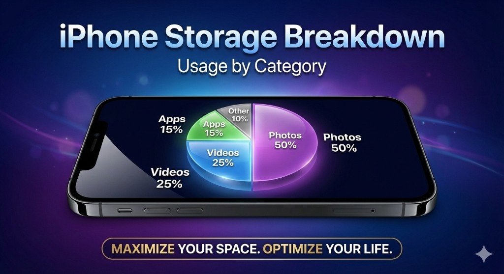

Start with the storage breakdown, then choose a method that addresses your largest removable category. This guide is a cleanup plan. If the numbers are confusing, use our storage diagnosis guide first.
Protect what you keep
Preserve important files and app data before removal. Check whether a change affects only a download or a synced library. There is no reliable fixed number of gigabytes that every reader will recover.

1. Read your storage recommendations
Open Settings → General → iPhone Storage and let the categories and app list load. Inspect recommendations before accepting them. Apple explains the storage controls and how temporary files are managed. Note your available space before making a change.
2. Remove downloads you can obtain again
Review offline films, music, podcasts, maps, and files in the apps that downloaded them. Choose a remove-download action where available when you want to keep a library entry. An offline file you still need for travel or work may be worth keeping.
3. Review duplicate and similar photos
Use Photos’ Duplicates collection for identified matches and compare similar shots carefully. Follow our duplicate review and merging instructions. A separate cleaner is optional if its grouping helps you; built-in tools may be enough.
4. Review screenshots and recordings
Find the relevant media collections in Photos; their placement varies by version. Check receipts, tickets, work details, and other records before deleting. A few unwanted recordings may matter more than many small screenshots, so inspect sizes as well as usefulness.
5. Consider smaller video copies
If a recording is worth keeping, a smaller export may suit your needs. Compare quality, audio, compatibility, and file size before deciding whether to remove the original. Our video-compression guide explains the tradeoffs and preservation steps.
6. Offload an unused app when its data matters
In iPhone Storage, select an app and inspect Offload App if available. It retains documents and data while removing the app itself. Reinstalling still depends on app availability and compatibility; confirm important data is preserved independently.
7. Review app data before deleting an app
Use in-app controls for downloads and caches first. Documents & Data can contain valuable files and drafts, not just cache. Deleting an app removes related data; cloud recovery is not automatic. Verify sync, exports, account access, and any recovery codes before choosing deletion.
8. Clear Safari data selectively
Current Apple instructions use Settings → Apps → Safari; older versions put Safari directly in Settings. Read Apple’s history, cache, and cookies guide to choose between clearing history and removing website data. Removing login data can sign you out. Do this because the data is expendable, not because a fixed saving is promised.
9. Review message attachments
Save any attachments you need before removing them. Apple’s Messages storage instructions explain version-specific attachment controls. With Messages in iCloud enabled, changes can sync across devices. Automatic message expiry can remove conversations you wanted to retain, so inspect the consequences before enabling it.
10. Consider iCloud Photos optimization
Open Settings → your name → iCloud → Photos and review the available sync and optimization controls. Follow Apple’s photo-storage guide for your version. Optimization needs enough cloud capacity and does not make a synced library an independent backup.
Check device and cloud capacity separately. Deleting an iCloud backup concerns cloud quota; it is not a direct method for increasing available storage on the phone.
Check the result before doing more
Return to the same storage screen and repeat the task that was blocked. Review Recently Deleted before permanently removing anything; do not automatically trade away recovery just to complete a cleanup checklist.
If photo deletion did not resolve the warning, follow our after-deletion troubleshooting guide. If essential content still fills the device, compare archiving, cloud access, and more device capacity.
Frequently Asked Questions
What should I remove first?
Check Settings → General → iPhone Storage and review the largest category with content you no longer need. The best first step depends on your storage breakdown, not a fixed ranking of methods.
Is offloading the same as deleting an app?
No. Offloading removes the app while retaining its documents and data. Deleting removes the app and related data. Check preservation and sign-in requirements before either change.
Does buying iCloud storage increase iPhone capacity?
No. Device and cloud storage are separate. iCloud Photos optimization may reduce local photo storage when properly configured, but it does not add physical capacity.
Should I erase my phone to clear System Data?
Do not use a fixed System Data size as a reason to erase. Review normal storage controls and consult Apple support for persistent unexplained usage. Any support-directed reset needs a verified backup and recovery plan.
Want help reviewing your media?
Explore Fast Cleaner’s duplicate, similar-photo, and video tools. Check platform features and pricing before installing.
Fast Cleaner publishes this guide. Our privacy policy describes on-device media analysis and separate limited analytics. Product descriptions are developer statements; storage results depend on your files and choices.
Reviewed November 21, 2026. Follow the linked Apple guidance for your software version. Menus and available features vary by device. Examples are illustrative, and no fixed cleanup result is promised.